GitRebase
1. 向下游移动base
下游移动base,根节点是两个分支的交叉点
- 初始化数据
* c54f8b7 (HEAD -> b) version3 b
" * f9fc6be (a) version4 a
" * 730cb6a version3 a
"/
* 604ad92 version2 //a和b的交点,既base
* 648ef5e version1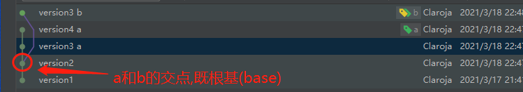
2.rebase 换基
此时HEAD在b分支上,我们可以现在base是version2,我们可以将b分支的base改为version1~4的任意位置,假设rebase到version3 a上
git rebase 730cb6a
这里使用等价的图形操作
- rebase操作
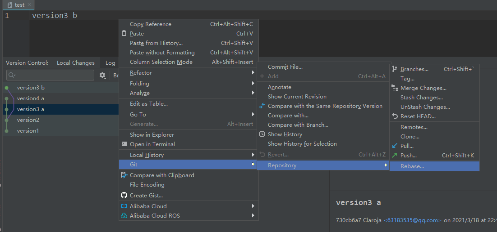
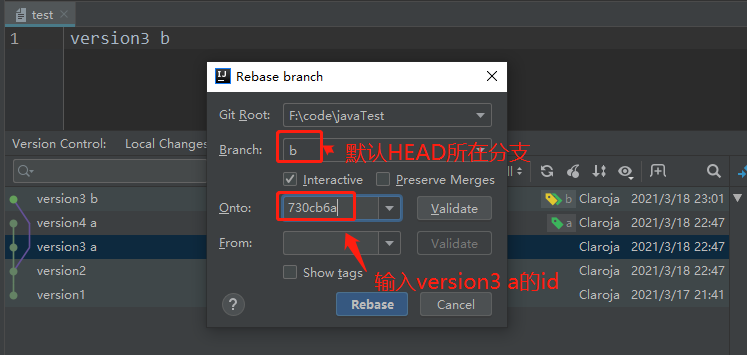
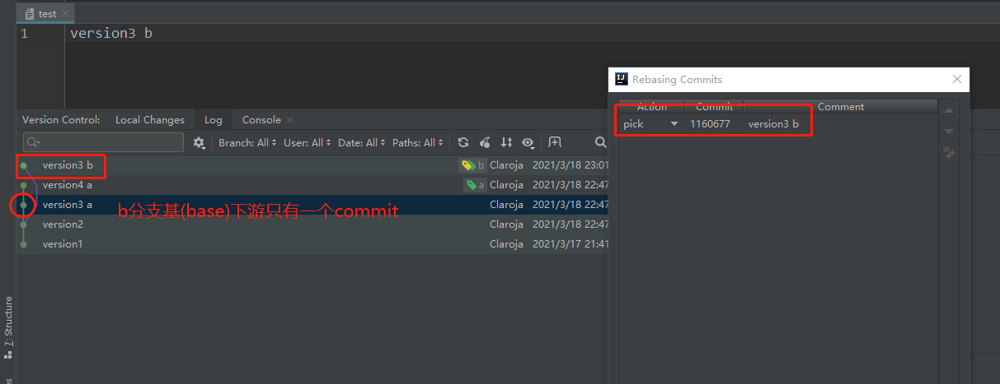
- 处理冲突
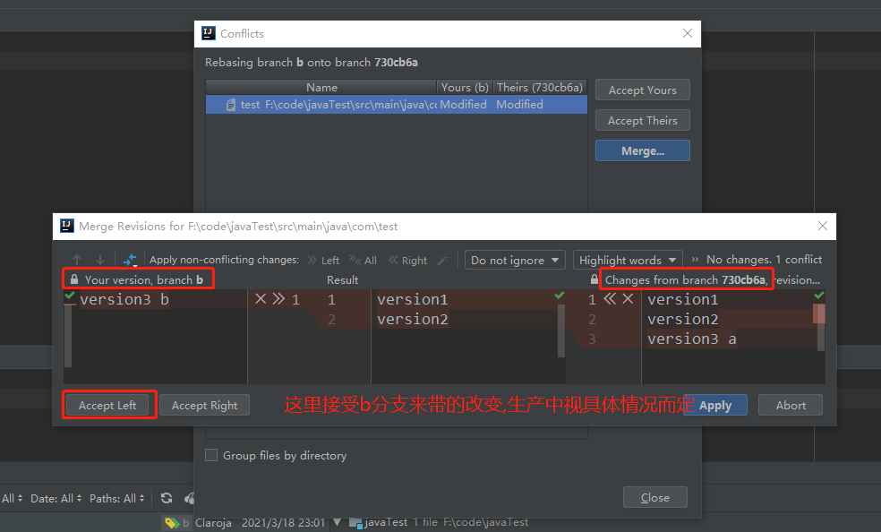
- 填写提交信息
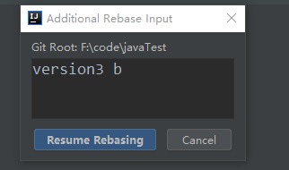
- 结果, b分支的base已经改变
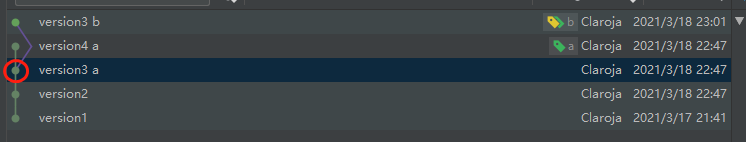
2. 上游reabase
向上游移动base,base是指定的上游commit点
假设要移动到version2
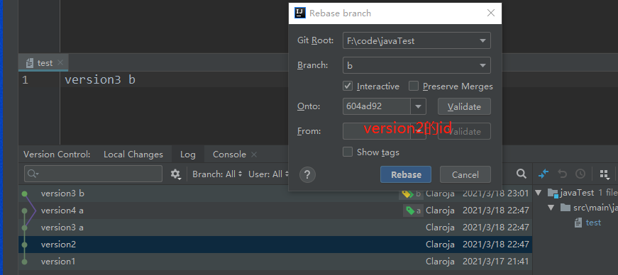
此时version2为base,这样计算的话b分支就有两个commit,verson3 a 和 version 3 b.
如果想恢复到最初的状态,可以吧version3 a 的
Action改成skip即可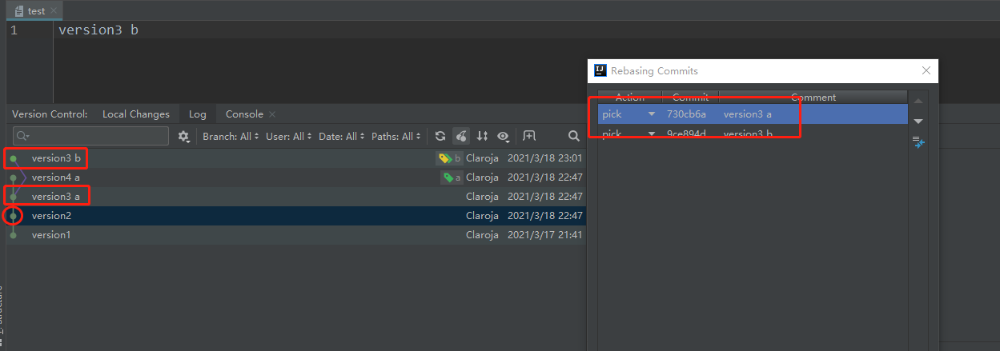
3. 合并中间提交
-
准备数据,每次提交一行
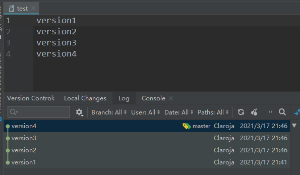
-
rebase
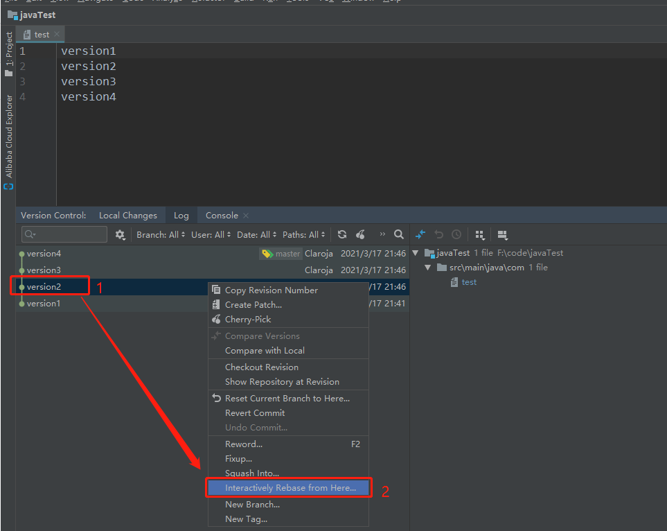
-
将version3合并到version2
fixup也可,就是不能修改提交信息
pick：保留该commit（缩写:p）
reword：保留该commit，但我需要修改该commit的注释（缩写:r）
edit：保留该commit, 但我要停下来修改该提交(不仅仅修改注释)（缩写:e）
squash：将该commit和前一个commit合并（缩写:s）
fixup：将该commit和前一个commit合并，但我不要保留该提交的注释信息（缩写:f）
exec：执行shell命令（缩写:x）
drop：我要丢弃该commit（缩写:d）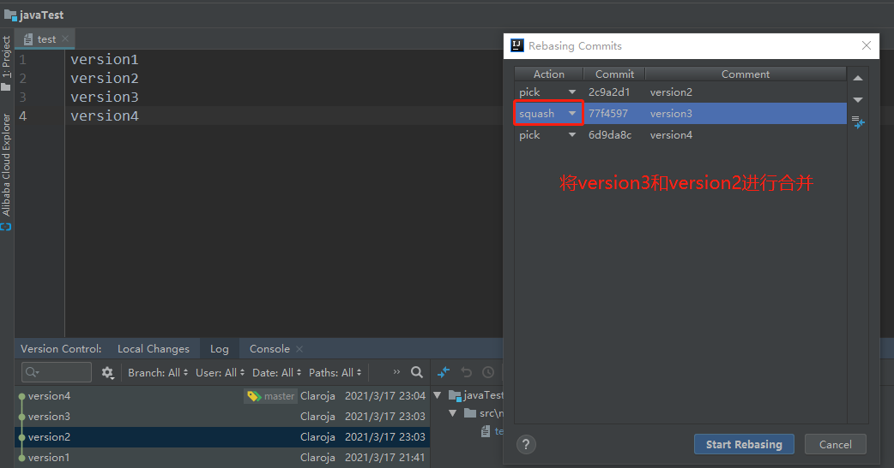
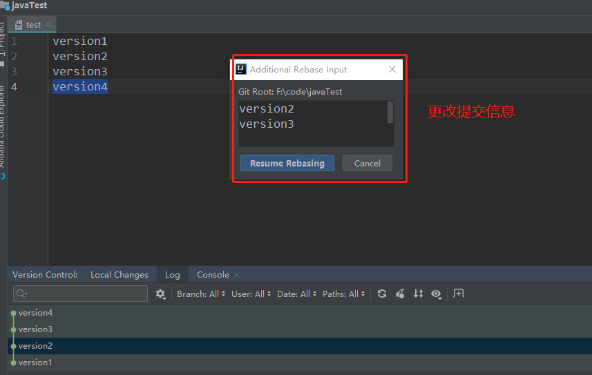
4.结果
内容进行了合并
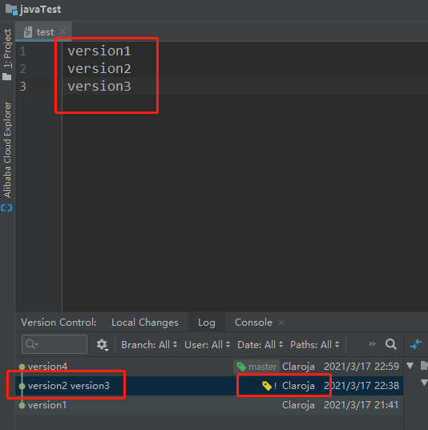